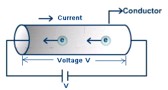

Ohm's law states that : "the Current through the conductor is directly proportional to the potential difference across its ends provided the temperature remains constant."Consider a conductor across which voltage is applied
Consider a conductor across which voltage is applied 
Current starts flowing through a conductor, We can also express Current in terms of Voltage and Resistance as
V = IR
where, V= Voltage applied to the conductor,
R = Resistance of the conductor,
I = Current flowing through the metal conductor.
The Electric Current flows from high potential to the low potential point. This is due to the fact that the resistance offered by the point at low potential point is less and hence current gets easy path to flow.
Ohms law states the relationship between three basic quantities of the electric circuit namely Voltage, Current and Resistance.
Ohms law can be stated as:
V = IRwhere V = Voltage,
I = Current,
R = Resistance.